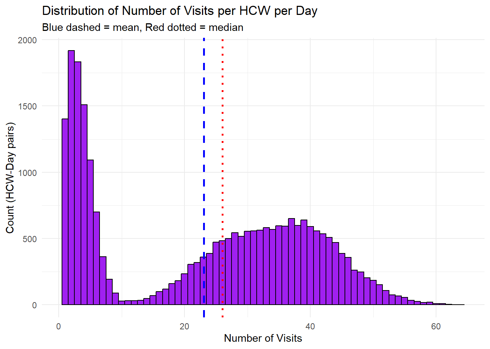
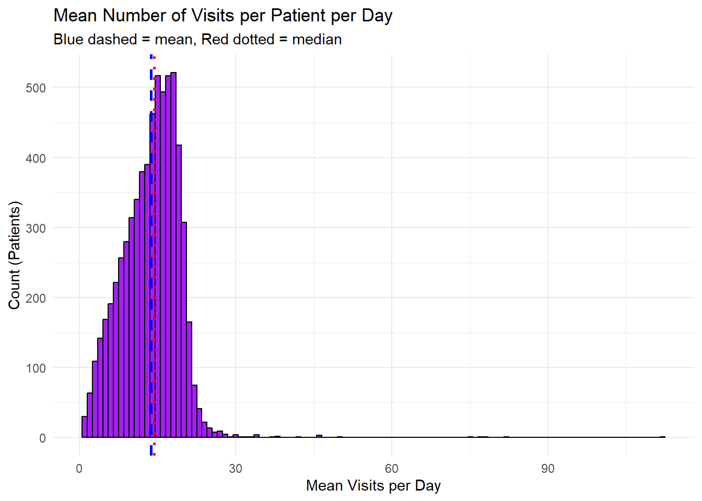
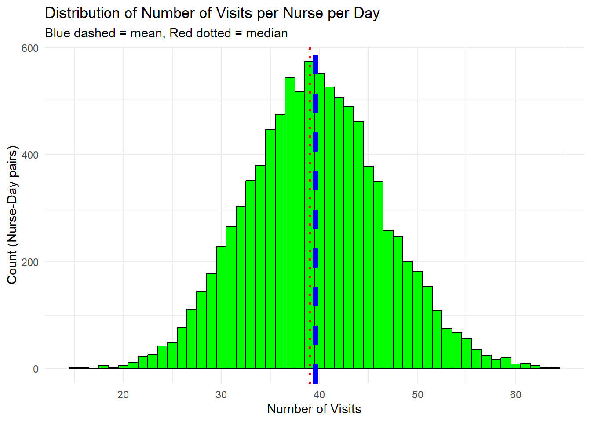
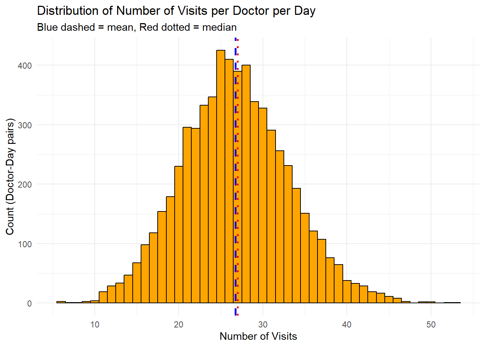
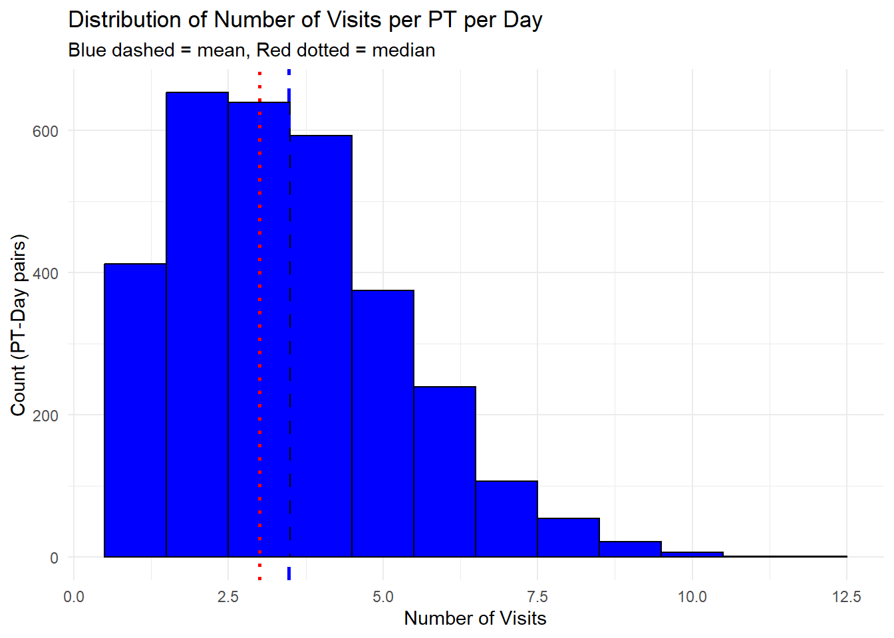
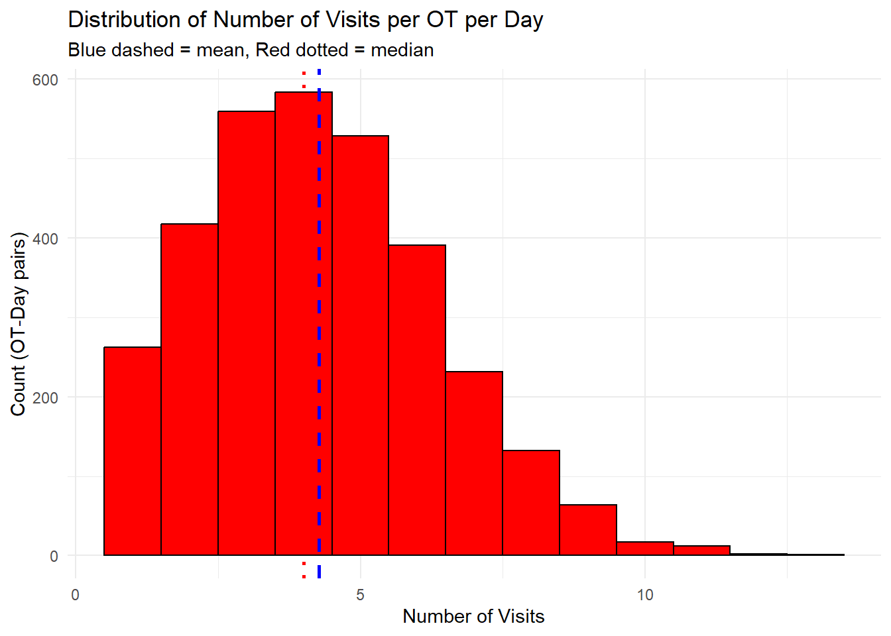
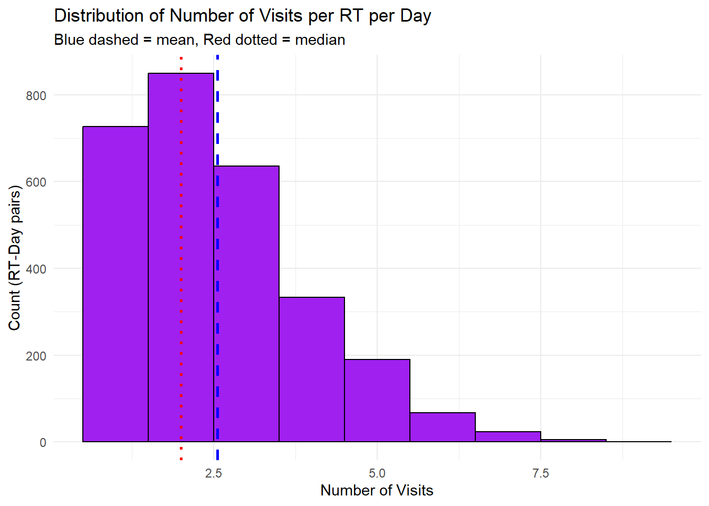

options(warn = -1)
suppressPackageStartupMessages(library(dplyr))
suppressPackageStartupMessages(library(ggplot2))Healthcare Worker Visit Analysis
Healthcare Worker Visit Analysis
This document provides analysis of the visit rates and behaviors of health care worker agents (HCWs) in the simulation. All results and visualizations related to HCW visits will be presented here.
library(dplyr)
df2 <- read.table("visit_data.txt", header = TRUE, sep = ",", stringsAsFactors = FALSE)
df2$visitDay <- floor(df2$visitTime)
# Remove first 90 visitTime values
df2_filtered <- df2 %>% arrange(visitTime) %>% slice(-(1:90))
# Histogram: for each hcwId, each day, distribution of number of visits
visits_per_day <- df2_filtered %>% group_by(hcwId, visitDay) %>% summarise(n_visits = n())`summarise()` has grouped output by 'hcwId'. You can override using the
`.groups` argument.library(ggplot2)
ggplot(visits_per_day, aes(x = n_visits)) +
geom_histogram(binwidth = 1, fill = "purple", color = "black") +
geom_vline(aes(xintercept = mean(visits_per_day$n_visits)), color = "blue", linetype = "dashed", size = 1) +
geom_vline(aes(xintercept = median(visits_per_day$n_visits)), color = "red", linetype = "dotted", size = 1) +
labs(title = "Distribution of Number of Visits per HCW per Day",
x = "Number of Visits",
y = "Count (HCW-Day pairs)",
subtitle = "Blue dashed = mean, Red dotted = median") +
theme_minimal()
# Text output for min, max, IQR
min_visits <- min(visits_per_day$n_visits)
max_visits <- max(visits_per_day$n_visits)
iqr_visits <- IQR(visits_per_day$n_visits)
cat("Min visits per HCW per day:", min_visits, "\n")Min visits per HCW per day: 1 cat("Max visits per HCW per day:", max_visits, "\n")Max visits per HCW per day: 64 cat("Interquartile range (IQR):", iqr_visits, "\n")Interquartile range (IQR): 33 nvisits <- nrow(df2)
# Filter for nurse visits
df_nurse_visits <- df2[df2$hcwType == 'NURSE', ]
df_nurses <- distinct(df_nurse_visits, hcwType, hcwId)
nurse_count <- nrow(df_nurses)
# Filter for other HCW types
df_doctor_visits <- df2[df2$hcwType == 'DOCTOR', ]
df_doctors <- distinct(df_doctor_visits, hcwType, hcwId)
doctor_count <- nrow(df_doctors)
df_pt_visits <- df2[df2$hcwType == 'PT', ]
df_pts <- distinct(df_pt_visits, hcwType, hcwId)
pt_count <- nrow(df_pts)
df_ot_visits <- df2[df2$hcwType == 'OT', ]
df_ots <- distinct(df_ot_visits, hcwType, hcwId)
ot_count <- nrow(df_ots)
df_rt_visits <- df2[df2$hcwType == 'RT', ]
df_rts <- distinct(df_rt_visits, hcwType, hcwId)
rt_count <- nrow(df_rts)Total patient visits by hcw type
| HCW Type | Total visits (365d) | mean/day |
|---|---|---|
| NURSE (26) | 375600 | 39.5785037 |
| DOCTOR (17) | 165865 | 26.7308622 |
| OT (9) | 13679 | 4.1640791 |
| PT (9) | 10802 | 3.2882801 |
| RT (9) | 7242 | 2.2045662 |
Histogram: Mean Number of Visits per Patient per Day
# Calculate mean number of visits per patientId per day
visits_per_patient_day <- df2_filtered %>% group_by(patientId, visitDay) %>% summarise(n_visits = n())`summarise()` has grouped output by 'patientId'. You can override using the
`.groups` argument.mean_visits <- visits_per_patient_day %>% group_by(patientId) %>% summarise(mean_visits = mean(n_visits))
ggplot(mean_visits, aes(x = mean_visits)) +
geom_histogram(binwidth = 1, fill = "purple", color = "black") +
geom_vline(xintercept = mean(mean_visits$mean_visits), color = "blue", linetype = "dashed", size = 1) +
geom_vline(xintercept = median(mean_visits$mean_visits), color = "red", linetype = "dotted", size = 1) +
labs(title = "Mean Number of Visits per Patient per Day",
x = "Mean Visits per Day",
y = "Count (Patients)",
subtitle = "Blue dashed = mean, Red dotted = median") +
theme_minimal()
min_mean_visits <- min(mean_visits$mean_visits)
max_mean_visits <- max(mean_visits$mean_visits)
mean_mean_visits <- mean(mean_visits$mean_visits)
median_mean_visits <- median(mean_visits$mean_visits)
cat("Min visits per patient per day:", min_mean_visits, "\n")Min visits per patient per day: 1 cat("Max visits per patient per day:", max_mean_visits, "\n")Max visits per patient per day: 112.5 cat("Mean visits per patient per day:", mean_mean_visits, "\n")Mean visits per patient per day: 13.75631 cat("Median visits per patient per day:", median_mean_visits, "\n")Median visits per patient per day: 14.33333 Visits per HCW per Day by Type
Distribution of Number of Visits per Nurse per Day
visits_per_nurse_day <- df_nurse_visits %>% group_by(hcwId, visitDay) %>% summarise(n_visits = n())`summarise()` has grouped output by 'hcwId'. You can override using the
`.groups` argument.ggplot(visits_per_nurse_day, aes(x = n_visits)) +
geom_histogram(binwidth = 1, fill = "green", color = "black") +
geom_vline(aes(xintercept = mean(visits_per_nurse_day$n_visits)), color = "blue", linetype = "dashed", size = 2) +
geom_vline(aes(xintercept = median(visits_per_nurse_day$n_visits)), color = "red", linetype = "dotted", size = 1) +
labs(title = "Distribution of Number of Visits per Nurse per Day",
x = "Number of Visits",
y = "Count (Nurse-Day pairs)",
subtitle = "Blue dashed = mean, Red dotted = median") +
theme_minimal()
min_nurse_visits <- min(visits_per_nurse_day$n_visits)
max_nurse_visits <- max(visits_per_nurse_day$n_visits)
mean_nurse_visits <- mean(visits_per_nurse_day$n_visits)
median_nurse_visits <- median(visits_per_nurse_day$n_visits)Min visits per nurse per day: 15
Max visits per nurse per day: 64
Mean visits per nurse per day: 39.5785037
Median visits per nurse per day: 39
Distribution of Number of Visits per Doctor per Day
visits_per_doctor_day <- df_doctor_visits %>% group_by(hcwId, visitDay) %>% summarise(n_visits = n())`summarise()` has grouped output by 'hcwId'. You can override using the
`.groups` argument.ggplot(visits_per_doctor_day, aes(x = n_visits)) +
geom_histogram(binwidth = 1, fill = "orange", color = "black") +
geom_vline(aes(xintercept = mean(visits_per_doctor_day$n_visits)), color = "blue", linetype = "dashed", size = 1) +
geom_vline(aes(xintercept = median(visits_per_doctor_day$n_visits)), color = "red", linetype = "dotted", size = 1) +
labs(title = "Distribution of Number of Visits per Doctor per Day",
x = "Number of Visits",
y = "Count (Doctor-Day pairs)",
subtitle = "Blue dashed = mean, Red dotted = median") +
theme_minimal()
min_doctor_visits <- min(visits_per_doctor_day$n_visits)
max_doctor_visits <- max(visits_per_doctor_day$n_visits)
mean_doctor_visits <- mean(visits_per_doctor_day$n_visits)
median_doctor_visits <- median(visits_per_doctor_day$n_visits)Min visits per doctor per day: 6
Max visits per doctor per day: 53
Mean visits per doctor per day: 26.7308622
Median visits per doctor per day: 27
Distribution of Number of Visits per PT per Day
visits_per_pt_day <- df_pt_visits %>% group_by(hcwId, visitDay) %>% summarise(n_visits = n())`summarise()` has grouped output by 'hcwId'. You can override using the
`.groups` argument.ggplot(visits_per_pt_day, aes(x = n_visits)) +
geom_histogram(binwidth = 1, fill = "blue", color = "black") +
geom_vline(aes(xintercept = mean(visits_per_pt_day$n_visits)), color = "blue", linetype = "dashed", size = 1) +
geom_vline(aes(xintercept = median(visits_per_pt_day$n_visits)), color = "red", linetype = "dotted", size = 1) +
labs(title = "Distribution of Number of Visits per PT per Day",
x = "Number of Visits",
y = "Count (PT-Day pairs)",
subtitle = "Blue dashed = mean, Red dotted = median") +
theme_minimal()
min_pt_visits <- min(visits_per_pt_day$n_visits)
max_pt_visits <- max(visits_per_pt_day$n_visits)
mean_pt_visits <- mean(visits_per_pt_day$n_visits)
median_pt_visits <- median(visits_per_pt_day$n_visits)Min visits per PT per day: 1
Max visits per PT per day: 12
Mean visits per PT per day: 3.478905
Median visits per PT per day: 3
Distribution of Number of Visits per OT per Day
visits_per_ot_day <- df_ot_visits %>% group_by(hcwId, visitDay) %>% summarise(n_visits = n())`summarise()` has grouped output by 'hcwId'. You can override using the
`.groups` argument.ggplot(visits_per_ot_day, aes(x = n_visits)) +
geom_histogram(binwidth = 1, fill = "red", color = "black") +
geom_vline(aes(xintercept = mean(visits_per_ot_day$n_visits)), color = "blue", linetype = "dashed", size = 1) +
geom_vline(aes(xintercept = median(visits_per_ot_day$n_visits)), color = "red", linetype = "dotted", size = 1) +
labs(title = "Distribution of Number of Visits per OT per Day",
x = "Number of Visits",
y = "Count (OT-Day pairs)",
subtitle = "Blue dashed = mean, Red dotted = median") +
theme_minimal()
min_ot_visits <- min(visits_per_ot_day$n_visits)
max_ot_visits <- max(visits_per_ot_day$n_visits)
mean_ot_visits <- mean(visits_per_ot_day$n_visits)
median_ot_visits <- median(visits_per_ot_day$n_visits)Min visits per OT per day: 1
Max visits per OT per day: 13
Mean visits per OT per day: 4.2760238
Median visits per OT per day: 4
Distribution of Number of Visits per RT per Day
visits_per_rt_day <- df_rt_visits %>% group_by(hcwId, visitDay) %>% summarise(n_visits = n())`summarise()` has grouped output by 'hcwId'. You can override using the
`.groups` argument.ggplot(visits_per_rt_day, aes(x = n_visits)) +
geom_histogram(binwidth = 1, fill = "purple", color = "black") +
geom_vline(aes(xintercept = mean(visits_per_rt_day$n_visits)), color = "blue", linetype = "dashed", size = 1) +
geom_vline(aes(xintercept = median(visits_per_rt_day$n_visits)), color = "red", linetype = "dotted", size = 1) +
labs(title = "Distribution of Number of Visits per RT per Day",
x = "Number of Visits",
y = "Count (RT-Day pairs)",
subtitle = "Blue dashed = mean, Red dotted = median") +
theme_minimal()
min_rt_visits <- min(visits_per_rt_day$n_visits)
max_rt_visits <- max(visits_per_rt_day$n_visits)
mean_rt_visits <- mean(visits_per_rt_day$n_visits)
median_rt_visits <- median(visits_per_rt_day$n_visits)Min visits per RT per day: 1
Max visits per RT per day: 9
Mean visits per RT per day: 2.5563007
Median visits per RT per day: 2